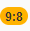
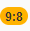
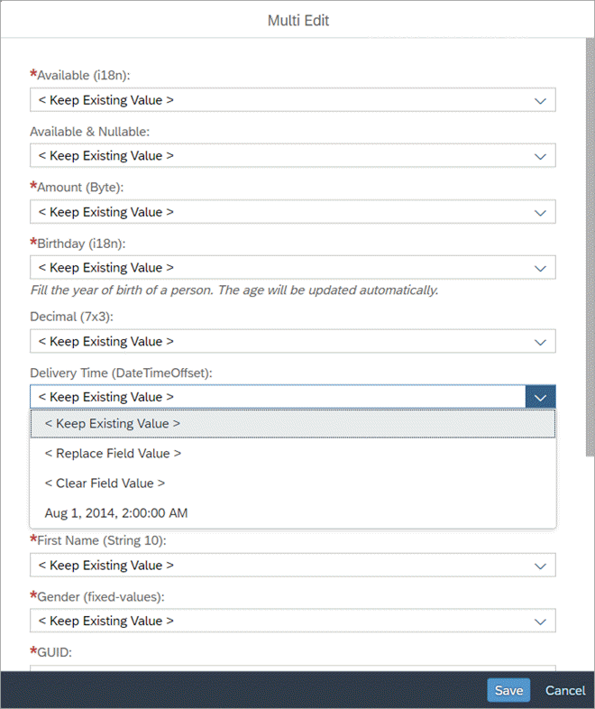

What's New in SAPUI5 1.54
With this release, SAPUI5 is upgraded from version 1.52 to 1.54.
New Controls
-
sap.m.ColorPalette: Provides the user with a palette containing up to 15 predefined web-standard colors, such as, Gold, Dark Magenta, and White. You can enable a Default Color button with a specified default color visible for the user. If the predefined set of colors is not sufficient, you can enable a More Colors button that opens sap.ui.unified.ColorPicker. For more information, see the API Reference and the Samples.

-
sap.m.TimePickerSliders: Enables the user to choose time, in different formats, from the available lists in the sliders. The control can be used inside any container. For more information, see the API Reference and the Samples.

-
sap.suite.ui.commons.MicroProcessFlow: Enables you to embed process flow indicators into other controls, such as headers, lists, and tables. This control acts as a generic container with process flow nodes laid out linearly along the horizontal axis. By default, the process flow nodes appear as circular icons that use semantic colors and provide click events. The default nodes can be replaced by other SAPUI5 controls, such as micro charts, status indicators, buttons, and labels.
For more information, see Micro Process Flow, the API Reference and the Samples.

-
sap.tnt.InfoLabel: Small non-interactive control whose purpose is to attract attention to a certain piece of information such as a state, quantity, condition. The control is vertically aligned with the SAPUI5 Input and Button control families.
InfoLabel has a renderMode property with the values loose and narrow that specify the side paddings. By default, the padding is loose, but for numeric text values, use narrow paddings. 
The background and text color combinations are predefined. You can choose from 9 color schemes where the text content and choice of color depend on your preferences. The colorScheme property also accepts a digit as a value.

The size of the InfoLabel control adjusts to fit other controls, such as non-editable forms or tables, when the displayOnly property is set to true.

For more information, see the API Reference and the Samples.
-
sap.ui.comp.smartmultiedit: Enables the users to perform mass changes on multiple homogeneous objects. When you pass a set of such objects to the SmartMultiEdit control, it provides a customizable list of object attributes. Each attribute value can be changed, cleared, or kept as it is. The control provides value helpers, formatting, and validation, based on the data types of individual object attributes. For more information, see Smart Multi Edit, the API Reference and the Samples.

Improved Features
Initialization Module for Bootstrap
<script src="/sapui5/resources/sap-ui-core.js"
id="sap-ui-bootstrap"
data-sap-ui-libs="sap.m"
data-sap-ui-oninit="module:sap/app/App"
data-sap-ui-resourceroots='{"sap.app": "my/local/path"}'
data-sap-ui-theme="sap_belize"></script>
For
more information, see Configuration Options and URL Parameters.
manifest Property for Component Containers
You can now also use the "Manifest First" mechanism for component containers. For more information, see Using and Nesting Components.
SAPUI5 OData V4 Model
-
Enhancements to the adapter to use the V4 model with an OData V2 service:
-
Handling of complex filters with and, or, not, brackets, and frequently used functions including contains.
-
Support for bound operations by evaluating the V2 annotation sap:action-for.
-
Additional annotation conversions and warnings (in the console) for V2 annotations that are not converted.
-
-
Suspend and resume absolute context and list bindings. A suspended binding will not send requests to the backend.
-
Possibility to refresh a single row in an absolute list binding.
-
Support of bound functions.
-
Newly created entities in an absolute list binding are refreshed/reread automatically after the successful post to the server.
-
It is now possible to request the x-csrf token and the root metadata document earlier. This is controlled by model parameter earlyRequests.
-
Action advertisements can be accessed in bindings by specifying #<namespace>.<action>
For more information, see OData V4 Model, the API Reference, and the Sample in the Demo Kit.
Default Font
A new default font, the 72 font family that offers some legibility and accessibility enhancements, has been implemented.
Spreadsheet Export
A new worksheet is available for exported spreadsheets in the sap.ui.export library that provides additional context information, such as administrative information like the server. For more information, see the API Reference for metaSheetName and the Sample.
Support Assistant Performance and Usability Improvements
-
Better initial loading performance - now each library should have a .supportrc file in its root folder. The purpose of this file is to serve as a metadata container to be used by the Support Assistant ruleset loader module.
For more information, see Create a Ruleset for a Library.
-
Improved perceived UI performance during initial tool loading – achieved by early and dynamic rendering of the most important UI elements and introducing a progress bar in the main screen of the Support Assistant.
-
Improved usability:
-
The selection of rules to run an analysis has been improved. Now, selecting a library selects all the rules it contains.
-
The Issues and Rules buttons are now highlighted to show the user which view is active at the moment.
-
The issue details in the Issues view have been moved from the top to the bottom of the window for better usability.
-

UI5 Inspector Updated
A new minor version 0.9.4 of the UI5 Inspector is available in the Chrome Web Store with some code adjustments and the new SAPUI5 logo.
Demo Kit Improvements
-
Information about downloading SAPUI5 can now be accessed easily through the new Download button on the home page:

-
A new API Reference button is now available when a sample page is loaded. It links directly to the control's API information:

-
In the API Reference, information is now available if an aggregation is used by default:

-
Browser back button functionality is available for the API Reference as the navigation steps are now persisted in the browser history.
-
Performance improvements: We have enabled lazy loading for the methods in the API Reference and implemented other various optimizations. The performance of the app has improved as a result.